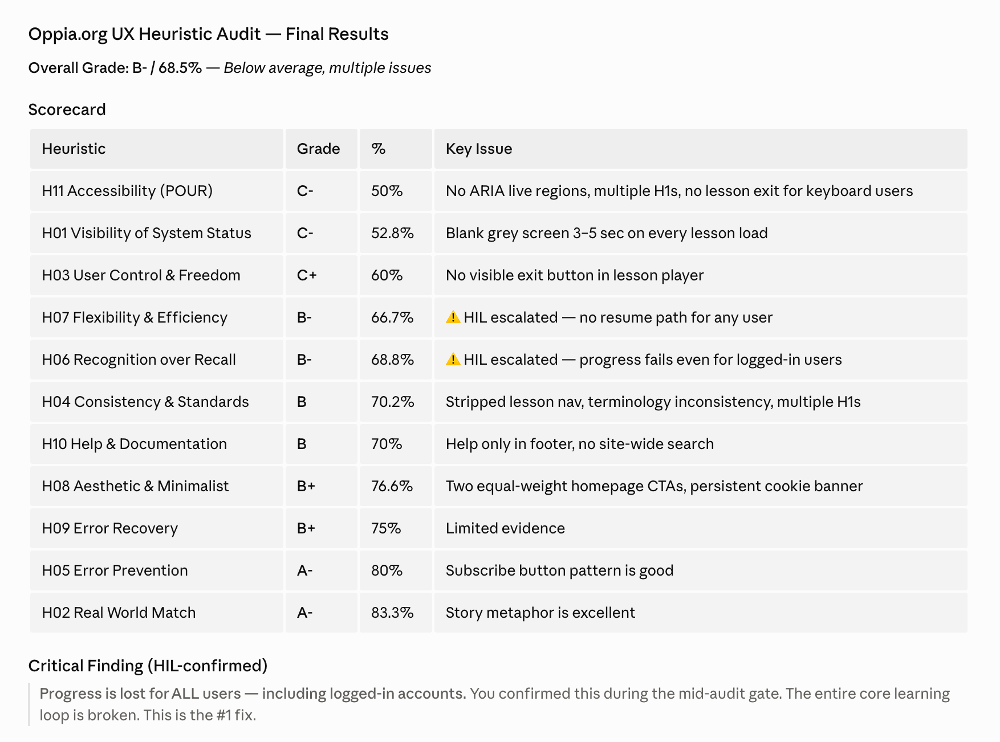

What is UX Heuristics Compass?
UX Heuristics Compass is a local-first usability audit toolbox for websites, app screens, prototypes, screenshots, and short task flows. It helps a reviewer find what feels confusing, hidden, inconsistent, inaccessible, cognitively heavy, or hard to recover from, then ranks the fixes that matter most.
The beta is built around a 14-part heuristic system: Nielsen Norman Group's 10 usability heuristics plus accessibility and ease of access, empathetic engagement and inclusion, customer journey and satisfaction, and UX writing.
Claude Cowork Plugin
Best for Claude Cowork or Claude Code once the beta package is verified. The plugin will bundle the local MCP, skill, and host guidance.
Package pending
Claude Desktop Extension
Best if you use Claude Desktop. The MCPB/Desktop Extension will connect Claude to the local UXHC tools.
MCPB pending
Skill / Prompt-Only Alternative
A standalone skill for hosts that cannot use the MCP yet. Useful as a fallback or as a lighter teaching/coaching surface.
Skill pending
Pick Your Path
Downloads are intentionally paused while local beta testing finishes. These paths are ready for the package pass, so the page can publish now without pretending the assets are finished.
| I want a fast first read | Use the quick audit prompt to review a screenshot, page capture, or small task flow. |
| I need the full checklist | Use the full audit prompt for scored 0-4 checklist ratings and a UX Health Snapshot. |
| I want the AI to ask questions | Use the advanced audit prompt with human-loop questions for context, calibration, and report readiness. |
| I want multiple perspectives | Use the multi-agent prompt for general UX, accessibility, and UX-writing perspectives. |
| I am testing implementation details | Use the implementation-aware prompt with screenshots, source notes, rendered previews, or browser observations. |
Your First Prompt
Copy a prompt into Claude, Codex, or another host AI. If native question UI is available, the host should use it for the context questions instead of asking in plain chat.
Skill Audit
When to use: You want a prompt-only UX review before the MCP package is installed.
MCP Quick Audit
When to use: You have UXHC installed and want a compact audit.
Full Checklist Audit
When to use: You want scored findings across the active heuristic checklist.
Advanced Human-Loop Audit
When to use: You want context, calibration, and report-readiness questions built into the audit.
Multi-Agent UX Panel
When to use: You want several UX perspectives without pretending there was a real user study.
UX Coaching
When to use: You want help turning findings into practical fixes.

About the author
Jonathan Kyle Hobson is a UX researcher, product strategist, and AI tool builder with 10+ years of experience across design, storytelling, and emerging technology. He holds a master's degree in User Experience from Arizona State University. Kyle created UX Heuristics Compass to make heuristic UX audits more concrete, structured, and useful for people who need interface feedback before they ship.
What Is UX Heuristics Compass?
UX Heuristics Compass is a local UX review assistant for visible interfaces. It helps you evaluate a website, app screen, prototype, screenshot, or short task flow before it ships or gets shared with stakeholders.
The goal is not to replace usability testing with real users. The goal is to catch the obvious problems earlier: unclear labels, hidden next steps, inconsistent patterns, inaccessible controls, overloaded screens, weak error recovery, and gaps in the content or journey.
How It's Built
UXHC is built as a local-first MCP with deterministic heuristic data, checklist-level scoring, source preparation, bounded URL capture, report validation, local report artifacts, human-loop guidance, and agent-audit aggregation.
The host AI owns conversation, visual interpretation, and user-facing explanation. UXHC owns the rubric structure, scoring contracts, report readiness, source boundaries, local persistence, and artifact generation.
What's Inside
The beta includes 14 heuristic records and 204 possible desktop/mobile checklist items. The core 10 heuristics come from Nielsen Norman Group's usability heuristic framework. UXHC adds four optional general profiles for accessibility, inclusion, customer journey, and UX writing.
This is an early beta. The core audit contract is stable enough to present publicly, but package names, skill wording, and some output shapes may still change before the release assets are attached.
How To Use It
Start with a bounded source: one screenshot, one app screen, a small page capture, or a short named task flow. Tell the AI what the user is trying to do, what platform matters, and whether you want the optional profiles included. UXHC works best when the evidence is specific and the task is clear.
Tool Overview
A compact map of the current MCP surface. These names are included so host AIs and technical reviewers can understand what the package will expose.
get_started- Gives first-use guidance, recommended next steps, and the current audit workflow.
ux_heuristic_overview- Explains the UXHC rubric, boundaries, audit modes, and host responsibilities.
list_heuristics- Lists the 10 core heuristics plus the four optional profiles and their checklist counts.
prepare_ux_source- Creates a bounded source manifest from screenshots, image bundles, page notes, or limited public URL captures.
quick_scan_ux- Runs a compact UX audit when source context and ratings are available.
audit_ux_surface- Runs the fuller audit flow with checklist scoring, evidence limits, and human-loop support.
validate_ux_report_payload- Checks whether an audit payload is ready for report generation.
generate_ux_audit_report- Writes local Markdown, HTML viewer, and optional PDF report artifacts.
calibrate_ux_sensitivity- Runs severity fixtures and human-review guidance for finding quality.
calibrate_ux_severity- Compatibility alias for sensitivity calibration.
compare_ux_audits- Compares two audit payloads and labels fixed, new, unresolved, or severity-changed findings.
draft_project_addon_profile- Drafts an opt-in project-specific checklist profile without changing the core score.
save_preferences- Saves complete onboarding preferences for repeated audits.
update_preferences- Updates saved audit preferences.
run_agent_audit- Aggregates a multi-persona UX audit and flags disagreement across evaluator perspectives.
get_agent_run- Retrieves a persisted multi-agent audit run by ID.
run_usability_test- Prepares bounded audience-persona usability evidence without full-site crawling or authenticated flows.
stress_test_heuristic_finding- Reviews one finding for UX fit, evidence limits, false-positive risk, and the smallest useful fix.
Install Guide
The install paths are staged now and will become active after beta package verification. This page is already using the final public install structure so those links can be filled without redesigning the page.
Claude Cowork Plugin
- Wait for the verified plugin zip to appear on this page.
- Download the plugin zip.
- Install it through the current Claude Cowork or Claude Code plugin flow.
- Run
get_startedor use the first prompt on the Get Started tab.
Claude Desktop Extension
- Wait for the verified MCPB/Desktop Extension file.
- Open Claude Desktop settings and find Extensions.
- Install the MCPB file and approve the standard local-extension warning.
- Ask Claude to use UX Heuristics Compass for a quick audit.
Skill File or Skill Zip
- Wait for the verified skill file or skill zip.
- Add it through your host app's skill import flow.
- Use the Skill Audit prompt on the Get Started tab.
Source Install
The source zip will be available after the final local beta check. Technical users can inspect the repository, run the self-test, and connect the MCP manually when the source package is published.
If Install Fails
Use the diagnostic prompt in the Advanced tab before editing files manually. Most failed installs come from an unavailable package, a host app that has not reloaded the MCP, or a path that needs local-machine adjustment.
Oppia.org UX Heuristic Audit
This public-safe example shows UX Heuristics Compass turning bounded page evidence into a scored heuristic audit, a plain-language readout, prioritized findings, evidence limits, and recommended next validation steps.
Example output B- / 68.5%

What the example demonstrates
The audit does more than list UI issues. It identifies progress loss as the highest-priority problem because it breaks the core learning loop, then separates what was observed from what still needs validation.
| Top finding | Progress is lost for all users, including logged-in accounts. |
| Primary themes | Progress persistence, lesson loading feedback, visible exit path, and screen-reader loading state. |
| Evidence limit | The audit is bounded to selected pages and is not a full WCAG compliance test. |
Frequently Asked Questions
Quick answers about UXHC, heuristic evaluation, MCPs, and install expectations.
What does UX Heuristics Compass actually do?
It helps an AI assistant review a visible interface with a structured UX checklist instead of giving generic design commentary. It returns scoped findings, severity, evidence limits, and fixes to prioritize.
What are UX, usability, and user experience?
UX means user experience: what it feels like for someone to use a product, service, website, or app. Usability is the part of UX focused on whether people can understand, navigate, complete tasks, recover from mistakes, and do what they came to do without unnecessary friction.
What is a heuristic evaluation?
A heuristic evaluation is a structured expert review. Instead of waiting for a full research cycle, a reviewer checks an interface against known usability principles and flags likely problems. It is fast and useful, but it is not the same as watching real users try the task.
What are Nielsen's heuristics?
Nielsen Norman Group's 10 usability heuristics are a widely used set of principles for evaluating interfaces. UXHC uses those 10 as the core, then adds four optional profiles: accessibility and ease of access, empathetic engagement and inclusion, customer journey and satisfaction, and UX writing.
Can this audit code?
It can use implementation evidence when a host AI provides it, such as rendered previews, source notes, browser observations, or external audit results. UXHC does not replace code review or accessibility testing, and implementation evidence must still be mapped back to visible usability findings.
Can it crawl a full website or authenticated flow?
No. The beta is intentionally bounded: screenshots, image bundles, desktop/mobile captures, and small public URL captures. It does not do full-site crawling, authenticated-flow automation, analytics ingestion, or unconstrained autonomous navigation.
What is an MCP connector or extension?
MCP means Model Context Protocol. In this context, Claude may call the local tool connection an MCP, connector, or extension. UXHC's extension is the MCP connector: it gives Claude structured local tools for preparing sources, running audits, validating reports, and generating artifacts. Learn more about MCPs.
What is the difference between the plugin, extension, and skill?
Plugin zip: the Claude Cowork or Claude Code bundle. Extension file: the Claude Desktop MCP connector. Skill: the prompt-only alternative a host can read without the MCP. You can install more than one when the release assets are available.
Does this work with Codex?
Yes. Codex can work with local MCPs, source installs, and prompt guidance. This beta.1 landing page does not provide a one-click Codex install path yet; technical Codex users should wait for the source package and AI-assisted install prompt.
Is UX Heuristics Compass safe to install?
Downloading anything from the internet carries real risk: malicious code, data collection, hidden scripts. UXHC is designed to reduce that surface area: it runs locally, uses bounded files, and does not need an external service for core workflows. No third-party tool is zero risk, so review the source or ask a trusted technical person before installing. Claude's warning is the standard prompt it shows for local third-party extensions, not a flag specific to this tool.
Do I need a GitHub account to download?
No. Once the release assets are published, the buttons will go directly to the files. GitHub is only where the files are hosted.
Advanced
This section is for technical reviewers, security-conscious users, and anyone preparing for package verification.
Release Assets
Release files are intentionally not linked yet. The planned assets are plugin zip, MCPB/Desktop Extension, skill file, skill zip, source zip, checksums, and a clean GitHub Pages kit.
Advanced: Planned Download Checklist
ux-heuristic-compass-plugin.zip | Pending package build and clean scan. |
ux-heuristic-compass-0.1.0.mcpb | Pending MCPB manifest and tool-surface verification. |
ux-heuristic-compass.skill | Pending skill guidance and prompt review. |
skill.zip | Pending skill zip package. |
ux-heuristic-compass-source.zip | Pending source package and private-file scan. |
checksums.txt | Pending SHA-256 generation after artifacts exist. |
AI-Assisted Install Prompt
This prompt is staged for the package pass. Use it after beta assets are available.